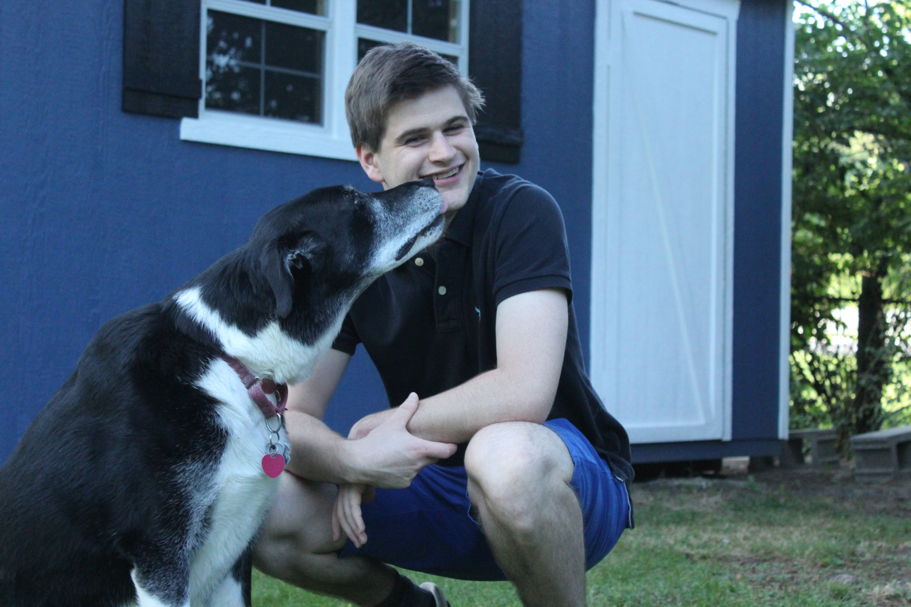

Christopher James King
-
 The Ohio State University
The Ohio State University
- BS Computer Science and Engineering
- Computer Graphics and Game Design
My Journey
2023

Vertafore
Software Engineer 2
As a full stack developer at the industry leading Insurtech company, Vertafore, I am a core member of the QQCatalyst Denver development team. QQ is used by thousands of small insurance agencies around the world to manage their customers and their policies. In my time there, I have played a major role in the development of new dashboard widgets and the bootstrap redesign of the site.
2020

EQLAB
Web XR Developer
As a result of my success in the VR Animation Capstone at Ohio State, I was hired to lead Equality Lab's Web XR project. Using the open source platform, Mozilla Hubs, I developed custom environments for several clients including an interactive career simulator for Miami Dade County Schools, an AI career counselor for The Paris Unemployment Office, and a virtual space for Christians and Muslims to pray together for the US Institute of Peace in Pakistan.
2015
The Ohio State University
Computer Science and Engineering
While I was fascinated by computers from a young age and had taken coding classes in high school, I credit the scarlet and gray for molding me into a competent developer with a keen sense for design. From my humble beginnings learning recursion for the first time to creating complex data visualization websites and VR video games, the time I had there gave me the tools and discipline to excel.